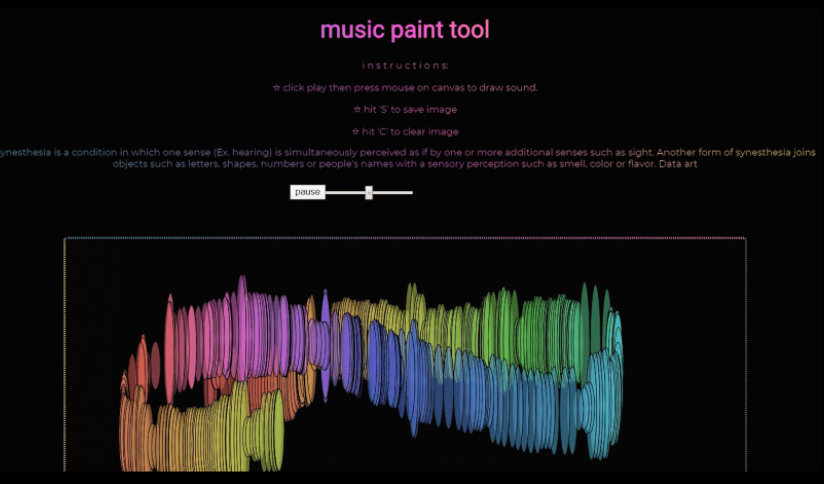

Fan art for Gjones, 2019
Outside of class, worked on fan art for a DJ G Jones for a music festival.
Highlight, 2020 Vuforia, Unity, Adobe Premiere
In this work, I wanted to “highlight” stretch marks instead of it being hidden. There are many beauty apps like snow, snapchat, and programs like photoshop that are being used to manipulate and distort people’s bodies and faces to make them look flawless. Usually, we see those edits in movies, tv shows, Hollywood, but now it’s easily accessible to the public. It's getting really common and normalized too. I really wanted people to feel more comfortable in their own skin/bodies and for people to own up to it. I wanted to create an augmented reality app where the user can use a tablet/phone to pan over photograph's of people's stretchmarks. In that sense, highlight and bring forth stretchmarks instead of hiding them.
I photographed these images, used Paint Tool SAI to draw over the stretch marks, adobe premiere to make the animated video, then unity
 https://rachcent.github.io/drawingmachine/music paint tool (2019) p5
Used p5 to create a music paint tool where when you draw, you can paint based on the applitude (how loud) of sound. The louder the music, the bigger the brush is.